Regla de Simpson 1/3.
El método de integración de Simpson, parte de aproximar a una función por el
polinomio interpolante de Lagrange, de grado dos. Ahora deduciremos las expresiones para
este método de integración, para ello escribimos el polinomio de interpolante de Lagrange
que pasa por tres puntos de una función f(x), cuyas abscisas son equidistantes (x0, y0), (x1,
y1), (x2, y2), como se muestra en la siguiente grafica.
| 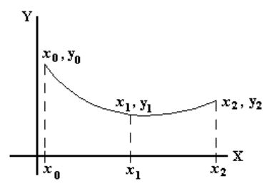 |
| 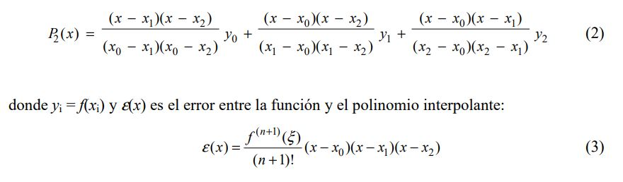 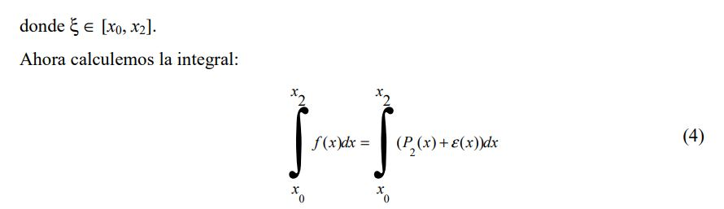 |
La integral del lado derecho podemos resolverla como dos integrales independientes, por lo que empezaremos con:
| 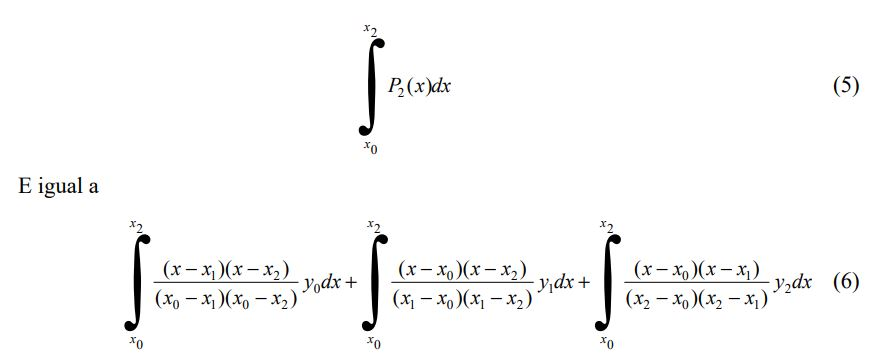 |
Pero recordemos que los puntos son equidistantes, es decir x2 - x1 = x1 - x0 igualando esta diferencia a h, la primera integral en (6) se reduce a:
| 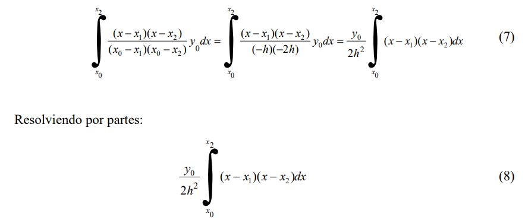 |
sea u = (x - x1) y dv = (x - x2) dx
| 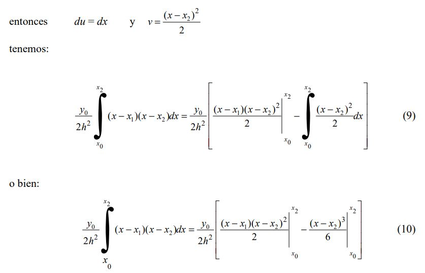 |
evaluando en los límites de integración:
| 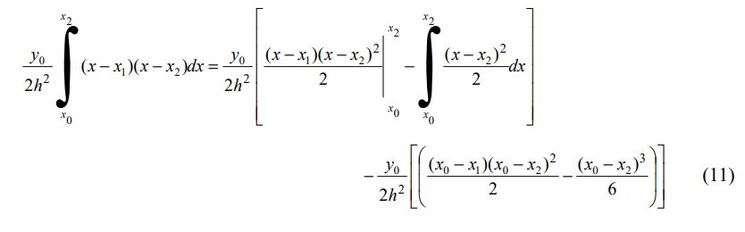 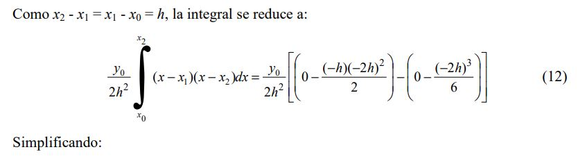 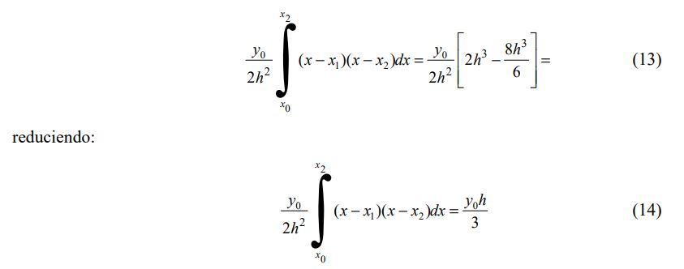 |
Ahora resolvemos de igual manera la segunda integral de la ecuación (6)
| 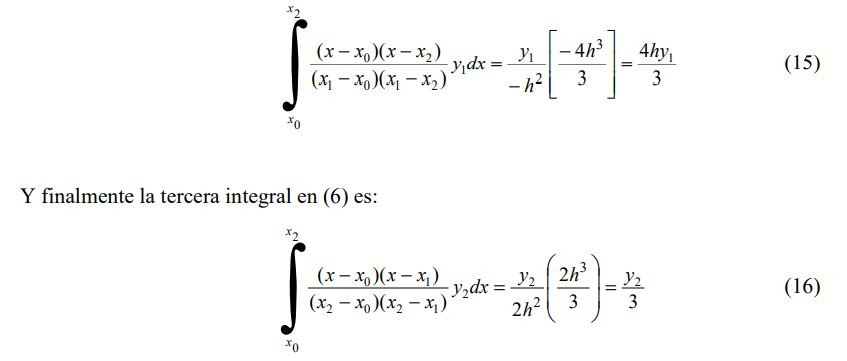 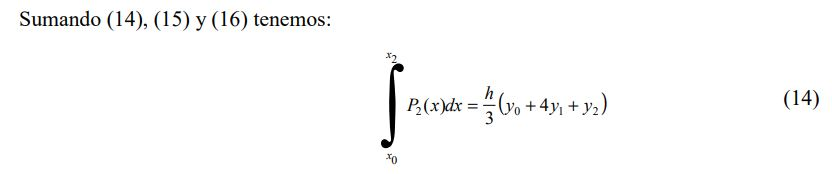 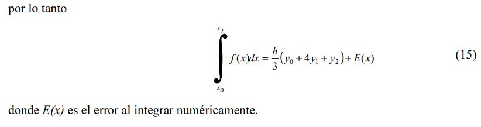 |
Si ahora consideramos cinco puntos de la misma función equidistantes (x0, y0), (x1, y1), (x2, y2), equidistantes (x3, y3), (x4, y4), cuyas ordenadas equidistan, como se muestra en la grafica siguiente.
| 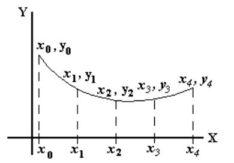 |
Ahora calculamos la integral desde x0 hasta x4, para ello utilizamos la expresión (14) pero la aplicamos primero de x0 a x2 y después desde x2 hasta x5.
| 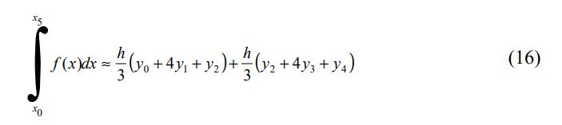 |
el signo ≈ es usado por que aun no consideramos el valor del error. Como las cinco abscisas son equidistantes h es la misma para cada término del lado derecho, podemos agrupar de la siguiente forma.
| 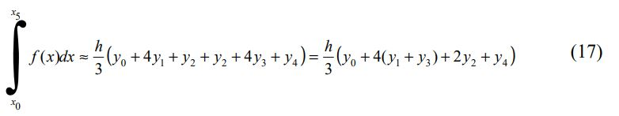 |
Ahora podemos aplicar repetidas veces la expresión (14) para obtener la integral de una
función, siempre que el número de puntos sea impar, notemos que los extremos se suman
una sola vez, mientras que las ordenadas con índice par se suman dos veces y las ordenadas
de índice impar se suman cuatro veces, así que para 2n + 1 puntos el valor de la integral se
obtiene como sigue:
| 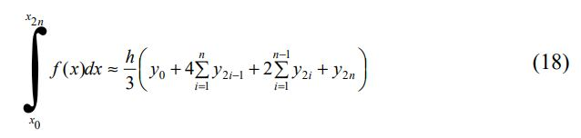 |
Aquí puedes descargar el Código, el cual fue desarrollado en el lenguaje de Python, si tu computadora no tiene descargado algún compilador compatible con el lenguaje puedes ir a nuestra sección de como descargar el compilador que recomendamos para su uso.
Presiona el link para descargar el algoritmo.
*** Regla de Simpson 1/3. ***